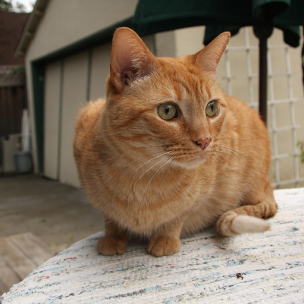
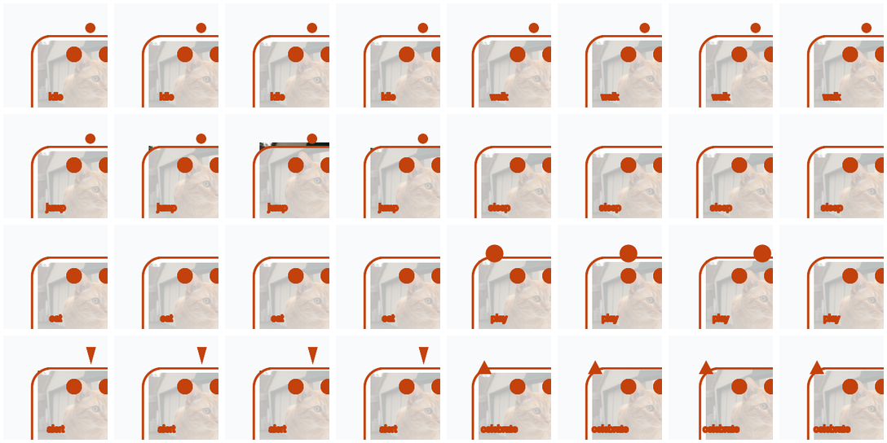
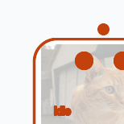
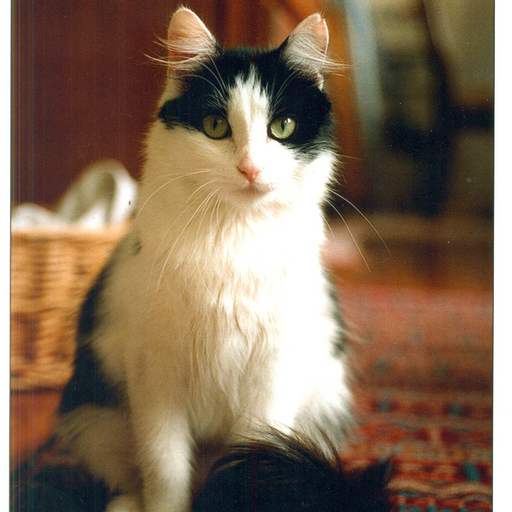
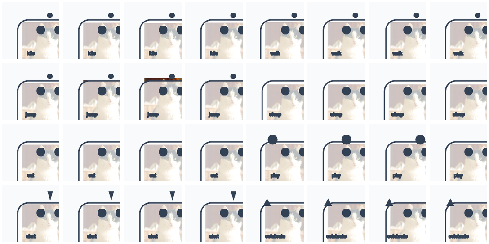
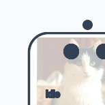
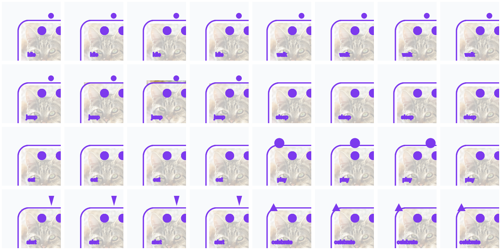
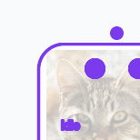

Orange Tabby Cat
CC BY-SA 3.0 · #85715C · passed



Action coverage: idle, walk, jump, sleep, eat, play, alert, celebrate
本报告使用公开授权样本进行真实下载、元数据剥离、派生图片生成、动作帧联系表和 GIF 预览截图验收。结论只覆盖 tested public photo samples。
目标链路为 Wikimedia 公开来源 -> 临时原图下载 -> ImageMagick 去元数据派生图 -> 本地局部叠加动作帧 -> contact sheet / GIF -> 桌面设置页 V38 anchors -> evidence final gate。当前实现已经生成派生图片和帧包，但仍是样本绑定的本地确定性路径。
用户进入设置页个性化生成区域，查看 V38 公开来源、像素资产、动作帧包、应用/回滚门槛和 blocked 原因；验收人员通过下方截图证据检查三张不同公开猫图的派生结果。
CC BY-SA 3.0 · #85715C · passed



Action coverage: idle, walk, jump, sleep, eat, play, alert, celebrate
CC BY-SA 4.0 · #8A735C · passed



Action coverage: idle, walk, jump, sleep, eat, play, alert, celebrate
CC BY-SA 3.0 · #917F64 · passed


Action coverage: idle, walk, jump, sleep, eat, play, alert, celebrate
| sampleId | 类型 | 处理状态 | 授权来源 |
|---|---|---|---|
| v38_orange_tabby_public | passing_cat | accepted_for_sanitization | CC BY-SA 3.0 |
| v38_tuxedo_public | passing_cat | accepted_for_sanitization | CC BY-SA 4.0 |
| v38_a_cat_public | passing_cat | accepted_for_sanitization | CC BY-SA 3.0 |
| v38_negative_dog_public | negative_non_cat | rejected_non_cat_negative | CC BY-SA 3.0 |
| v38_multi_cat_public | blocked_multi_cat | blocked_multi_cat_identity_ambiguity | CC BY-SA 3.0 |
本阶段不声明任意猫照片自动生成高质量动作资产、不声明 provider 集成、不声明生产发布、不声明 Windows 或跨平台就绪。该报告只证明公开样本路径的真实产物。
{kind=link}
{kind=link}
{kind=link}
{kind=link}
{kind=link}